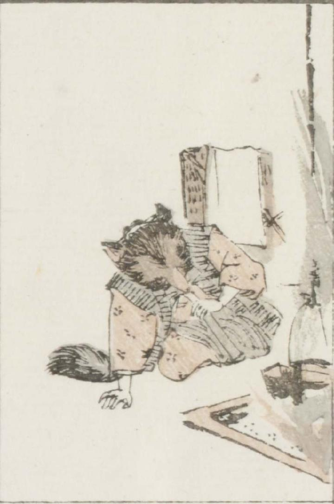

着物にちゃんちゃんこ姿の狸が、火吹き竹で息をふきかけ、囲炉裏に火を起こそうとしている。囲炉裏には鍋がかかっている。
著作者：牧墨僊／出典：親書誌：U426_nichibunken_0097：滑稽洒落狂画苑；コッケイシャレキョウガエン／日付：2007／資源識別子：U426_nichibunken_0097_0038_0000
Copyright (c)2010- International Research Center for Japanese Studies, Kyoto, Japan. All rights reserved.